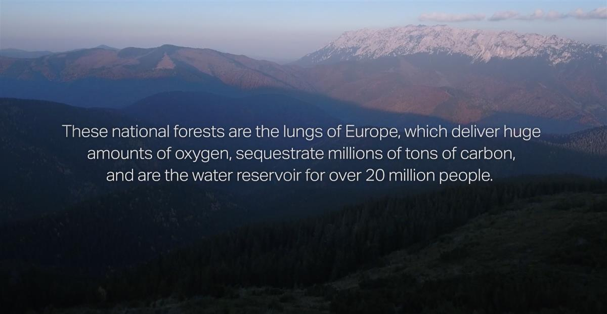
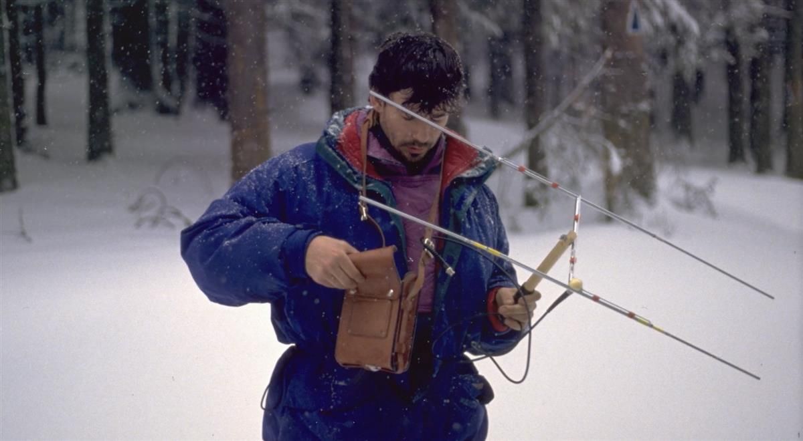
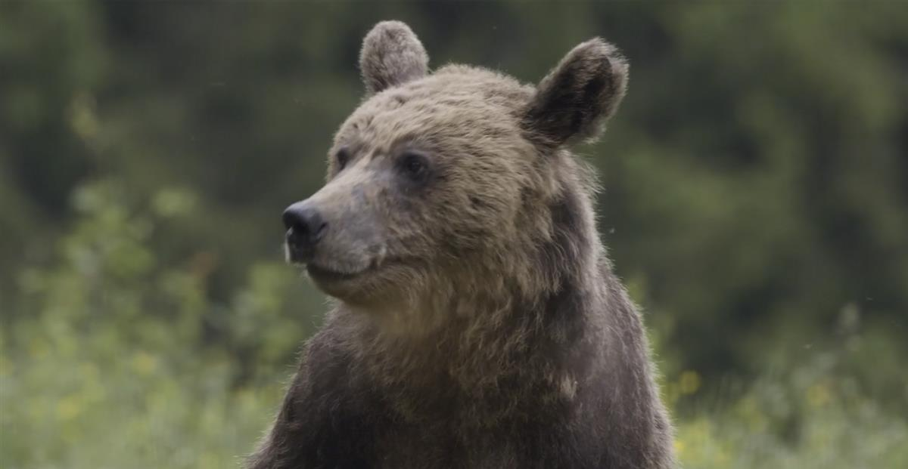
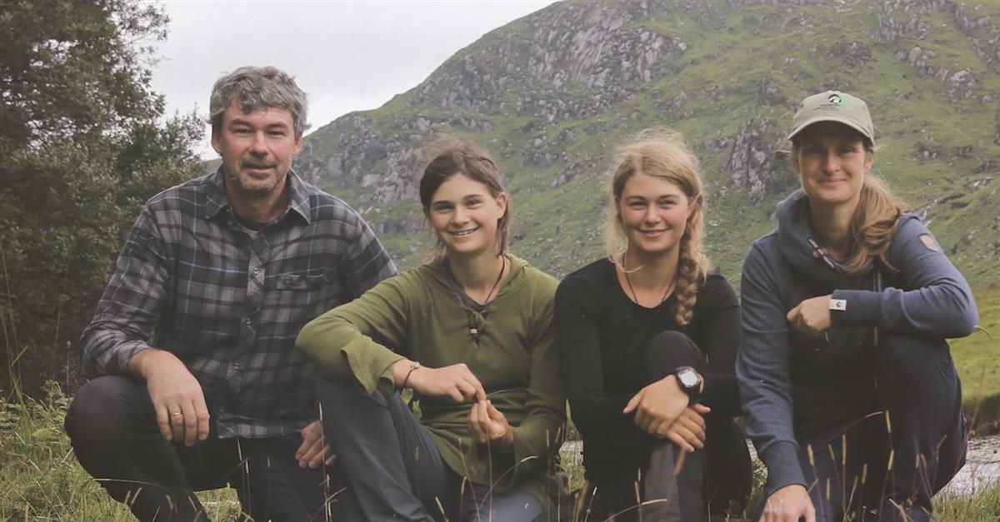
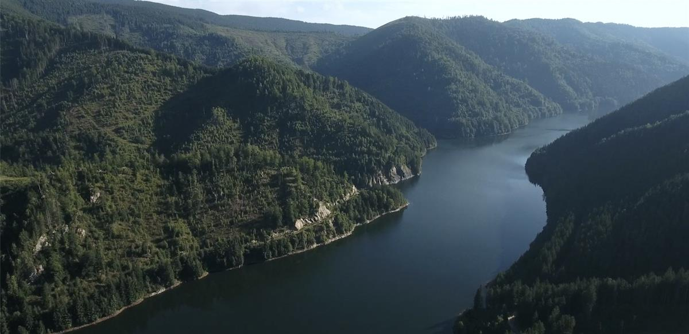

Water Bear - A Wild Education
SOURCE: WATER BEAR
A Wild Education
2020 Rated all 8m • Documentary
EDUCATION -WILD LIFE -REWILDING -HIKING -DEFORESTATION
This film is about the extraordinary journey of a family living deep in the wild of the Carpathian Mountains. Christoph and Barbara met in Romania, over a love of wolves, and continue breaking through local opposition with their passion and sheer determination to protect the Yellowstone of Europe. Raising their family in the heart of Romania, far away from their origin and roots in Austria and Germany, their two incredible daughters Cora and Enya, show that through their home-schooling and wild education, they have been instrumental in the development of their family’s life’s work -- creating the largest National Park on the continent. This truly inspirational family shares their life journey, their relationship with their home and environment. The Promberger’s run a vibrant wild business, that they lovingly built up from nothing, and now share their slice of wilderness with people from all over the world looking for an adventure. Alongside their ongoing work in protecting the local biodiversity through their successful reintroduction of wildlife around their re-wilding mission, we see through their eyes into the awe inspiring world that they have created. This is their wild education.
SOURCE: WATER BEAR




